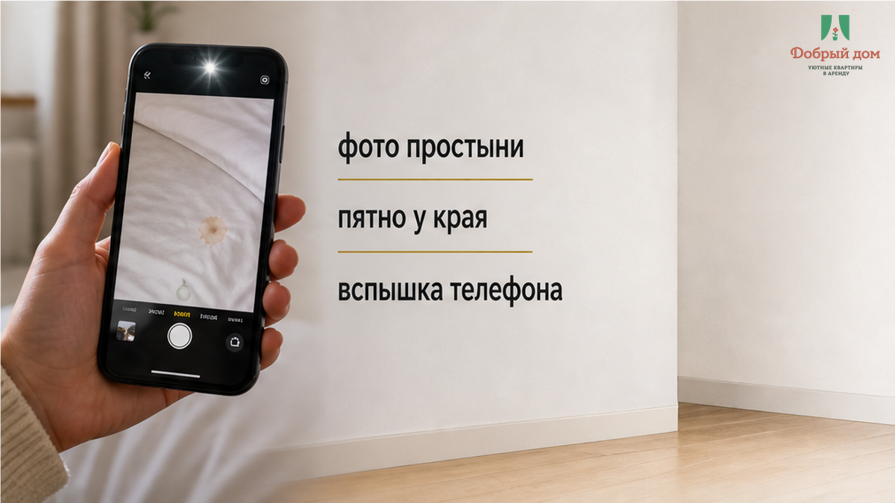
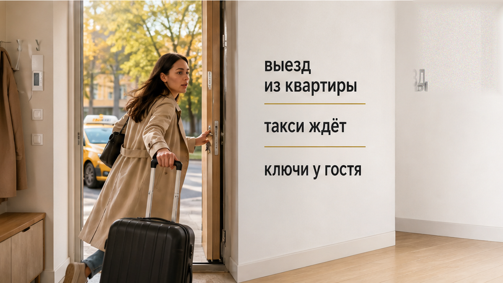
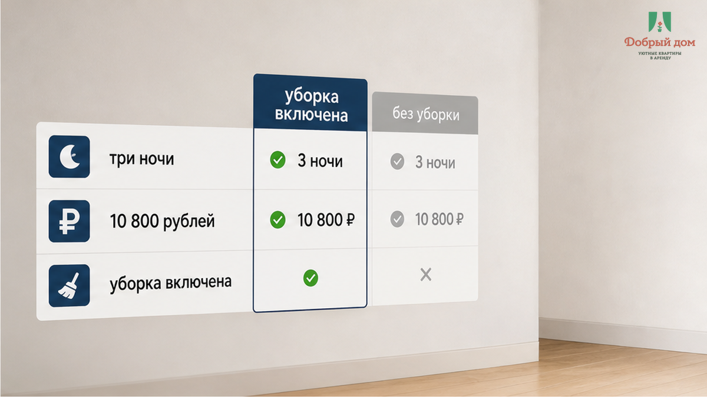
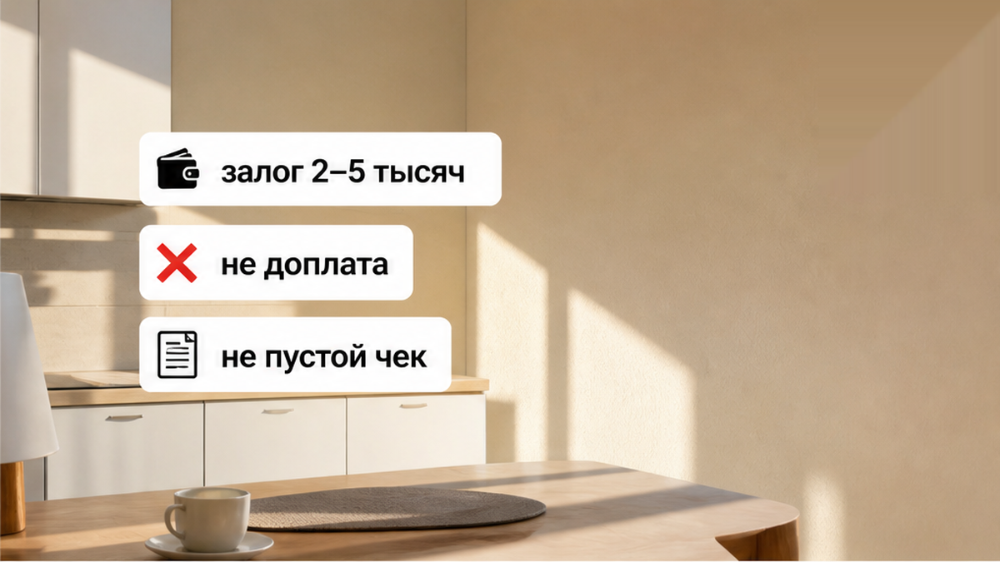
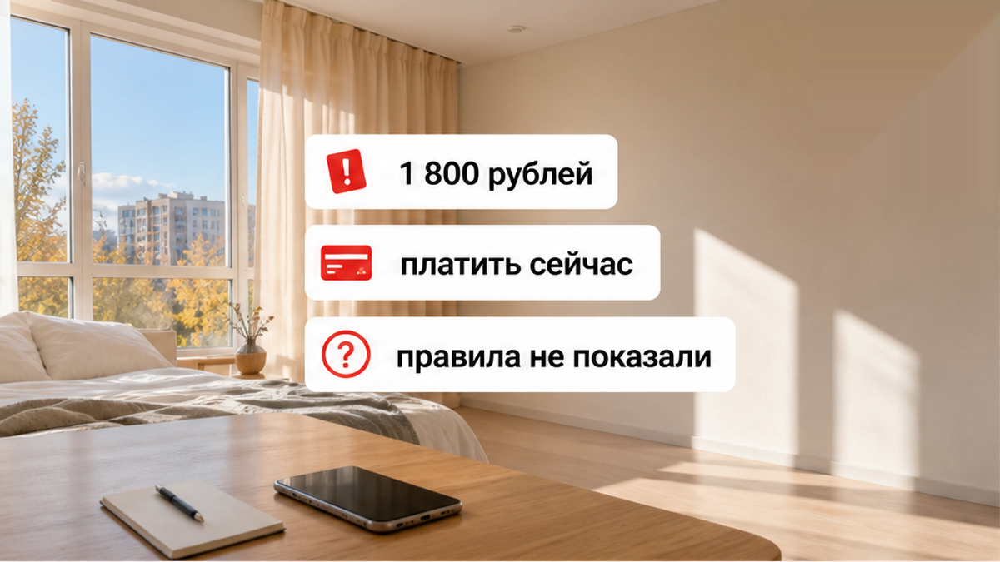
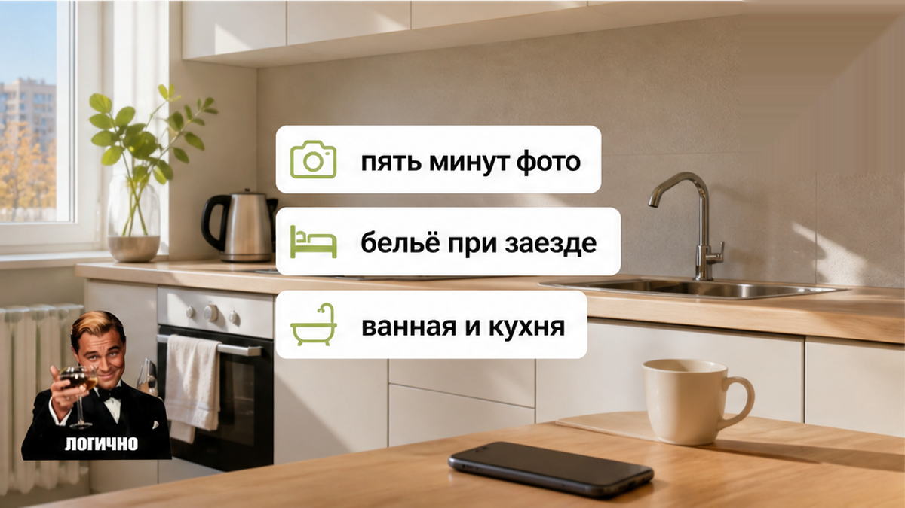

«Уборка включена — это после вас. А простынь — отдельно, 1 800 ₽», — говорит хост и разворачивает телефон экраном к гостю. На фото смятое бельё, пятно у края, свет от вспышки. Гость с чемоданом в руке и билетом на поезд отвечает единственное, что можно ответить в такой момент: «Три ночи платил. В карточке уборка в цене».
Три ночи, 10 800 ₽ переводом, обычный сон обычного человека — и на выезде фотография простыни превращается в счёт. Ключи ещё не отданы, такси уже под окнами, спорить некогда.
Сломалась не простынь. Сломалась строчка в объявлении. Гость прочитал «уборка включена в цену» как обещание: после нормального проживания никто не выставит отдельный чек за бельё, полотенца и следы того, что в квартире жили. Хост прочитал ту же строку иначе: уборка — это полы, санузел и мусор, а бельё в стирку — «другая услуга».
Два прочтения одной фразы встретились там, где у гостя меньше всего времени и аргументов, — у двери перед поездом.
Я хост посуточной в Тюмени. Это «Добрый дом». Мы пишем в Telegram и MAX, и такие истории нам присылают чаще, чем хотелось бы: человек снял квартиру на три ночи, всё было нормально, а на выезде выяснилось, что «включено» — не то, что он подумал.



В карточке написано: «уборка после выезда включена». Гость видит эту строку до брони и делает нормальный вывод — уборка между заездами входит в стоимость ночи. Обычно так и устроено: клининг между гостями — часть себестоимости проживания, а не сюрприз на выходе. Если хозяин понимает под уборкой только часть работ, это нужно написать заранее, отдельной строкой.
Потом идут три ночи проживания. Никаких вечеринок и залитых матрасов. Человек спал на белье, которое ему выдали именно для этого.
На выезде появляется фотография использованной простыни и цифра 1 800 ₽. Нет ссылки на пункт правил, описания, что считается порчей, сравнения с тем, как бельё выглядело при заселении. Есть только фото и требование перевести деньги сейчас.
Доплата за действительно испорченный текстиль в принципе возможна. В правилах некоторых апартаментов обычная уборка после выезда не оплачивается отдельно, а сильное загрязнение или испорченное бельё оцениваются заранее — например, в диапазоне 500–1 000 ₽ за единицу. Это внешний пример, не рыночная норма и не обоснование для 1 800 ₽. Но принцип здесь здравый: сначала правило, потом претензия.


В споре на пороге три разные вещи часто склеивают в одну.
Обычное использование. Смятая постель, складки, следы тела, немного изменившийся после трёх ночей вид комплекта — не ущерб. Для этого бельё и существует.
Дополнительная уборка. Квартира требует больше работы, чем стандартная приёмка: следы животных, если о них не договаривались, пятна по всей кухне, последствия большой компании. Такая ситуация обсуждается, но правила должны быть известны до заселения.
Порча. Прожжённая дырка, краска, кровь, тушь или другое повреждение, после которого комплект не переживёт стирку. Тогда нужны доказательства: как выглядело бельё при заселении, как выглядит сейчас и сколько стоит замена.
С депозитом та же логика. В посуточной аренде его размер часто держится в диапазоне 2 000–5 000 ₽, но это не универсальная цифра и не карт-бланш. Депозит — залог, который возвращают при отсутствии оснований для удержания. Доплата — новый платёж. В дверях их легко перепутать, особенно когда человек торопится на поезд.
И вопрос, который стоит задать хосту заранее: что именно входит в «уборку включена» — только полы и санузел, смена белья или ещё и стирка?
Если 1 800 ₽ за простыню после трёх ночей требуют без заранее показанного правила, это норма или развод? Напишите в Telegram или MAX: важны карточка, переписка и фото, а не только сумма.

На выезде у гостя нет ресурса. Чемодан собран, ключи ещё не сданы, транспорт уже ждёт. Любая сумма ниже стоимости билета кажется дешевле спора. Давление создаёт не только цифра, а момент.
Так происходит и в истории, где залог за посуточную квартиру придержали на выезде из-за спорного «ущерба». Похожая зависимость возникает, когда выезд и поезд не совпали по времени и человеку некуда деть чемодан.
Слово «включено» вообще умеет становиться ловушкой. В одном случае «всё включено», а в такси появляется доплата 2 400 ₽. В другом коммуналка «включена», но на выезде предъявляют счёт 1 840 ₽. Слово звучит как гарантия, а его смысл выясняется после оплаты.
Поэтому квартиру и бельё стоит фотографировать при заселении. Не для скандала, а чтобы через три ночи разговор шёл не «мне кажется» против «мне кажется», а фото против фото. Пять минут на входе снимают большую часть спора на выходе.
Нет. Так не заселяем. У нас человек не должен угадывать, что спрятано за словом «уборка». Что входит, что не входит и сколько стоит замена комплекта при доказанной порче — это нужно сказать до перевода денег.
Сначала проверка. Потом перевод. Не наоборот.
Гость до брони спрашивает, что покрывает «уборка включена». Хозяин до заезда показывает правила по белью и доплатам. Если правило не показали заранее, это не правило, а импровизация в дверях.
Короткий список перед арендой квартиры посуточно в Тюмени:
«Уборка включена» без расшифровки — не обещание, а дверь с двумя ручками: одну тянет гость, другую хозяин. Договоритесь о белье до ключей — тогда на выезде вас встретит такси, а не фотография простыни.
Нужна квартира, где список включённых услуг показывают до брони: Telegram-канал «Добрый дом» · MAX · бронирование · сайт · +7 (993) 574-83-22 · менеджер в Telegram.